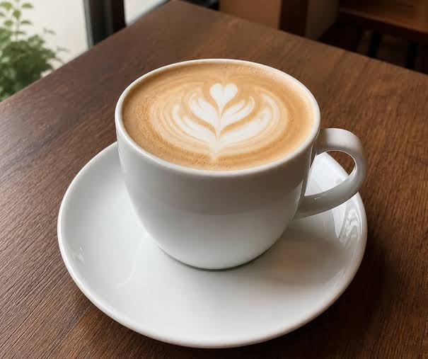
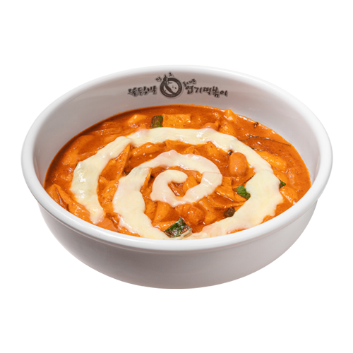
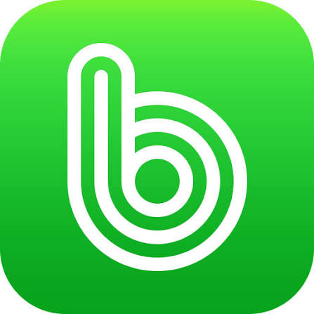

좋아하는 것들이 모여 만든 나만의 분위기
평소의 취향을 먼저 담고, 그 뒤로 더 좋아하는 것들을 이어서 적어보았어요.

커피 한 잔은 저에게 가장 확실한 코드 작성 준비물입니다.

맛있는 음식을 즐깁니다. 마라탕, 불닭볶음면, 엽떡처럼 강렬한 매운맛을 좋아합니다.

좋은 음악과 함께 산책을 할 때가 가장 행복합니다.
밴드 소리를 들을 때면 생각이 정리되는 느낌이 들어요. 특히 히게단과 검정치마를 자주 즐겨 듣습니다.
달콤한 디저트는 언제나 행복한 시작이 되고, 일본 여행은 늘 설레는 추억이 됩니다.
강연금, 헌터헌터, 진격의 거인을 좋아합니다. 애니를 보며 몰입하는 시간도 정말 소중해요.